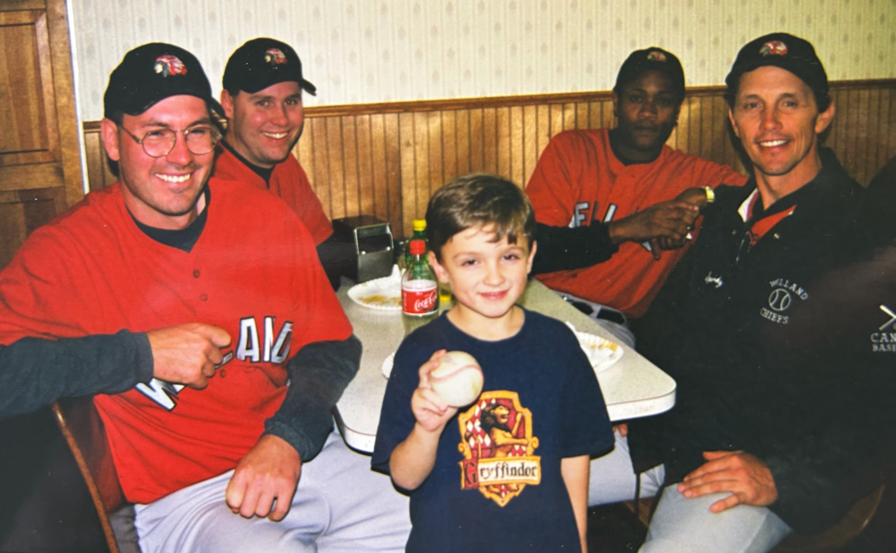
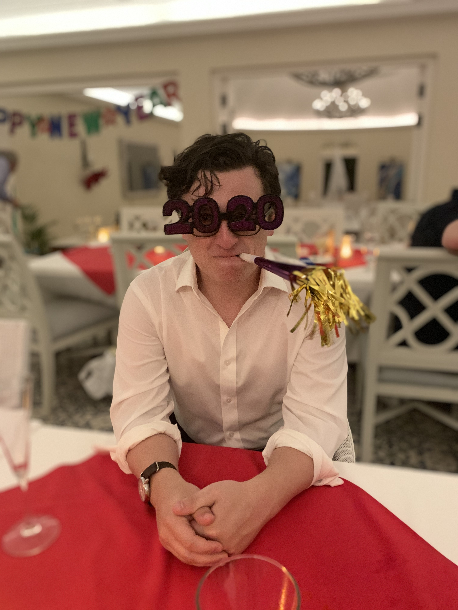

I'm a psychologist who studies why people believe the things they do—and what it takes for those beliefs to change. My work spans conspiracy theories, political attitudes, misinformation, and the emerging science of AI-assisted persuasion.
I'm currently an Assistant Professor at Carnegie Mellon University, where I hold appointments in the Department of Social and Decision Sciences, the Human-Computer Interaction Institute, and the Institute for Complex Social Dynamics. I also direct the Viewpoints Lab.
My recent research has focused on developing AI systems that can engage with misinformation through dialogue rather than censorship. In a series of experiments, my collaborators and I have shown that conversations with AI can durably reduce belief in conspiracy theories, shift political attitudes, and even change behavior around issues like vaccination and climate change. This work has been published in Science, Nature, and Nature Medicine, and featured in outlets from the New York Times to NBC Nightly News.
Before CMU, I was a postdoctoral fellow at MIT Sloan working with David Rand and Gordon Pennycook. I completed my PhD in psychology at Emory University under the mentorship of Scott O. Lilienfeld (2016–2020) and Arber Tasimi (2021–2022). Scott passed away in 2020, and his influence on my thinking about psychology, skepticism, and intellectual honesty remains profound.
I completed my B.A. in Psychology and Philosophy at Binghamton University (SUNY), where I worked with Steve Lynn on research into false memories, hypnosis, and imagination.

Quick Facts
- Position: Assistant Professor
- Institution: Carnegie Mellon University
- Department: Social & Decision Sciences
- PhD: Emory University, 2022
- Research: Belief, AI, Political Psychology
"The whole problem with the world is that fools and fanatics are always so certain of themselves, and wiser people so full of doubts." Bertrand Russell
Research Interests
AI & Persuasion
How can AI systems be designed to engage with misinformation productively? I develop and test dialogue-based interventions that use LLMs to address conspiracy theories, vaccine hesitancy, climate skepticism, and polarized political attitudes.
Conspiracy Theories & Misinformation
Why do people believe conspiracy theories? What psychological and social factors predict susceptibility? And critically: what interventions actually work to reduce these beliefs?
Political Psychology
The psychology of political belief, with particular attention to authoritarianism, rigidity, and the question of whether psychological asymmetries between left and right are real or artifacts of measurement.
Personality & Individual Differences
My earlier work examined the structure and correlates of personality, including psychopathy, intellectual humility, and the interplay between personality and political attitudes.
Education
2022
Ph.D., Psychology
Advisors: Scott O. Lilienfeld & Arber Tasimi
2018
M.A., Psychology
Advisor: Scott O. Lilienfeld
2016
B.A., Psychology & Philosophy
Honors Thesis Advisor: Steven Jay Lynn
Beyond the CV
When I'm not running experiments or writing papers, I enjoy reading widely (philosophy, history, fiction), thinking about the ethics of persuasion technology, and occasionally reminding myself that not everything needs to be optimized.
I believe strongly in open science, adversarial collaboration, and the value of engaging with ideas you disagree with. If you think I'm wrong about something, I'd genuinely like to hear why.

